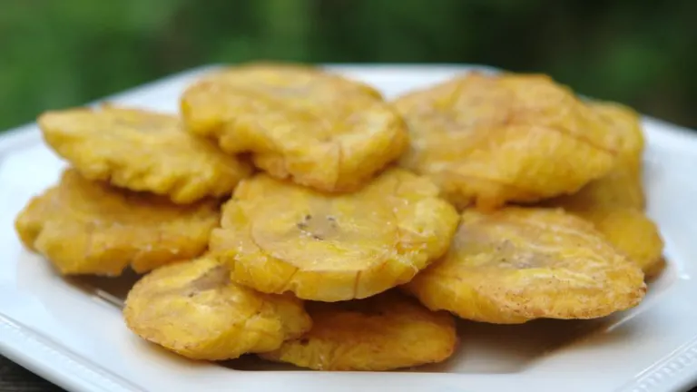

Tostones

Description
Tostones are crispy friefd plantains. A plantain is a very firm banana.
Serve as a side dish with your meal or as an apetizer.
Ingredients
- 1 green plantain
- 5 tablespoons oil for frying
- 3 cups cold water
- salt to tates
Steps
- Peel plantain and cut into 1 inch slices. Fill a bowl with 3 cups cold water
- Heat oitl ina large deep skillet over medium-high heat; add plantain slices in an even
layer and fry on both sides until golden brown, about 3 1/2 minutes per side.
Set skillet aside.
- Transfer plantain slices to a chopping board;flatten each one by placing a small plate on top and pressing down.
Dip plantain slices in the cold water
- Reheat oil in the skillet over medium heat; cook plantain slices for 1 minute on each side.
Season to taste with salt and serve immediately